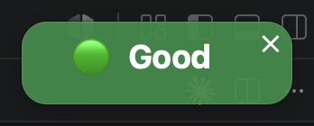
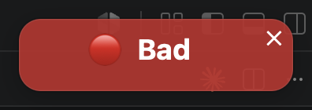
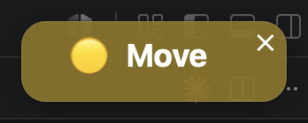
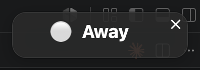
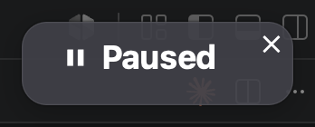
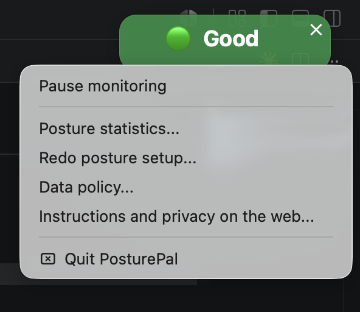

A posture reminder that learns your posture, instead of judging you against a generic idea of what good posture looks like.
Requires an Apple Silicon Mac (M1/M2/M3/M4) and a webcam. Free, and everything runs on your own machine.
PosturePal watches you through your webcam and catches the little ways your posture starts to break down — slouching in your chair, hunching toward the screen, letting your head creep too far forward, sitting too close to the display, or leaning onto one side of your chair until one shoulder sits noticeably higher than the other. A small coloured pill floats in the corner of your screen, and you get a notification if bad posture holds for more than a few seconds — naming everything it can see going wrong, not just one thing: “keep shoulders flat and lift your chin”, “stop slouching, sit up and sit back from the screen”.
Most posture apps apply one fixed rule to everyone. Bodies and desks are not the same, so a threshold tuned on one person is wrong for the next. PosturePal spends about three minutes photographing you in a range of poses the first time you open it, then fits its measurements to your proportions and your camera position.
The entry is named terminal-notifier rather than PosturePal because that is the macOS notification helper the app delivers its alerts through.
The app is signed and notarised by Apple, so it opens normally. If macOS ever blocks it, right-click the app and choose Open.
Do this at a proper desk and chair, sitting the way you would ideally want to sit throughout the day. PosturePal learns what good posture looks like from you, so the posture you use during calibration becomes its baseline. If you calibrate while slouching on a sofa or hunching over a laptop, PosturePal may treat that as “good” posture. For the best results, sit with your back supported, feet flat on the floor, your desk at a comfortable height, and your screen roughly at eye level.
It guides you through 10 short takes, and two things matter:
You can press ESC to skip setup, but the app then falls back to generic settings that work far less well. Each user account on a Mac gets its own calibration, so several people can share a machine.
The pill floats above everything and cannot be hidden behind the notch. Drag it anywhere you like; the ✕ quits the app.

Good posture
Bad posture — sit up
Too close to see you properly
Nobody at the desk
Paused — camera releasedRight-click the pill for everything else.

| Pause monitoring | Stops watching and releases the camera completely, so it is free for a video call. Choose it again to resume. |
|---|---|
| Redo posture setup | Runs calibration again — worth doing if you change desk, chair or laptop position. |
| Posture statistics | How you actually sat — good against bad time day by day, and which kinds of bad posture you slip into most. |
| Data policy | A summary of what is on this page under Privacy. |
Last updated 15 August 2026.
PosturePal runs entirely on your Mac. It has no accounts, no servers and no analytics.
Frames are read from the webcam, measured in memory, and discarded immediately. No photo or video is ever written to disk — not during monitoring and not during first-run calibration. What survives calibration is a set of numbers describing your proportions, never the pictures they came from.
~/.posturepal/calibration.json |
The measurements that describe your posture, and the thresholds fitted to you. Numbers only. |
|---|---|
~/.posturepal/status.json |
The current reading (for example Good) and when it was last
updated, so the pill can display it. |
Both live in your own home folder. Each user account has its own copy, and no
account can read another's. Deleting the ~/.posturepal folder erases
everything PosturePal knows about you.
PosturePal makes no network connections. The pose model runs locally and ships inside the app; nothing is uploaded, and the app does not check for updates or report usage. The third-party pose library it uses has usage analytics that are switched on by default, and PosturePal explicitly disables them.
The camera is open only while monitoring is running. Pausing releases it, and macOS shows its camera indicator whenever any app — including this one — is watching.
Nothing is shared with anyone, because nothing leaves your computer. There are no third-party services, trackers or advertisements.
Last updated 15 August 2026.
PosturePal is provided free of charge, as is, without warranty of any kind. By using it you accept the following.
PosturePal is a reminder tool, not a medical product. It does not diagnose, treat or prevent any condition, and its readings are not medical advice. If you have pain or a health concern, speak to a qualified professional. Do not rely on this app as a substitute for one.
PosturePal reads your posture from a camera image, so it works best when it can see you clearly: reasonable lighting, the camera at its usual position, and a calibration done carefully. Change your desk or move your laptop and it is worth running Redo posture setup, so its measurements match where you actually sit.
It is a helpful second opinion rather than a perfect judge, and you remain the one who decides how you sit.
To the fullest extent permitted by law, the author is not liable for any damages arising from the use of this software.
The camera sees whatever is in front of it. Please be considerate of other people in the room, and do not run PosturePal where recording would be inappropriate — even though no images are saved.
PosturePal is free to use for personal and educational purposes. The source code is kept private, because the data it was built from is photographs of real people who agreed to be photographed for this project and nothing else.